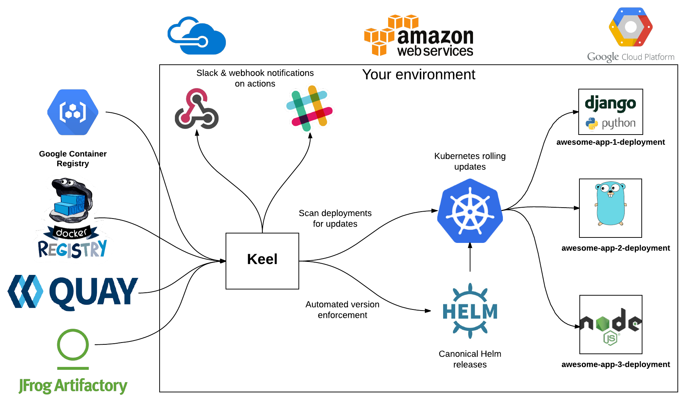

--- 
layout: default 
title: " - Automate Kubernetes deployments" 
description: "Kubernetes service to automate deployment updates"
---

<!-- Main -->
<div id="main">
	<!-- Featured Post -->
	<article class="post ">
		<header class="major">
			
			<h2><a href="#">No-fuss Deployment updates</a></h2>			
			<p>
				Keel provides a clean, robust solution to update your Kubernetes deployments on image push. </br>
				We encourage the use of <a href="http://semver.org/" target="_blank">semantic versioning</a> but since nobody's perfect - 'latest' tag is supported as well.
			</p>
		</header>		
		<div class="image main"> </div>
		<h3>Keel Overview</h3>
		<ul>
			<li>Easy to deploy - stateless, runs as a single container.</li>
			<li>Updates deployment if you have set Keel policy and newer image is available or <code>force</code> policy is specified.</li>			
			<li>Encourages the use of semantic versioning but can work with <code>latest</code> tags as well.</li>
			<li>Easy to extend with your custom triggers or deployment providers.</li>
			<li>Built for Kubernetes but support can be added for Swarm, Mesos, Nomad and other providers.</li>
		</ul>
		<h3>Why?</h3>
		<p>
		   Keel was built for lightweight, micro-service architecture based environments, where having a heavy CI/CD engine with lots of
		   dependencies
		   that consumes more resources than your whole backend (that's actually doing the important work for your business) doesn't make sense.		   				   
		   </br>
		   You should consider using Keel if:
		</p>
		<ul>
			<li>You don't want your "Continous Delivery" tool to consume more resources than your actual deployment does.</li>
			<li>You are not Netflix, Google, Amazon, {insert big company here} that already has something like Spinnaker that has too many dependencies such as "JDK8, Redis, Cassandra, Packer".</li>
			<li>You want simple, automated Kubernetes deployment updates on code/image push.</li>
		</ul>
		<h3>Features</h3>		
		<ul>
			<li>Automated subscription management for <a href="https://cloud.google.com/container-registry/"  target="_blank">Google Container Registry</a>.</li>
			<li><a href="https://docs.docker.com/docker-hub/webhooks/" target="_blank">DockerHub webhooks</a>.</li>
			<li>Native Keel webhooks.</li>
			<li>Polling - when webhooks aren't available Keel can watch images for SHA digest change.</li>
			<li>Slack and webhook notifications for taken actions or errors.</li>
		</ul>		

		<ul class="actions">
			<li><a href="/install" class="button big">Install Keel</a></li>
		</ul>
	</article>
</div>